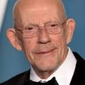

Michael J. Fox
Michael Andrew Fox, conhecido profissionalmente como Michael J. Fox, é um ator e ativista canadense e americano. Iniciando sua carreira como ator mirim na década de 1970, ele ganhou destaque interpretando Alex P. Keaton na série de comédia Family Ties da NBC e Marty McFly na trilogia de filmes De Volta para o Futuro.

Christopher Lloyd
Christopher Allen Lloyd é um ator americano. Ele apareceu em muitas produções teatrais, filmes e programas de televisão desde a década de 1960. É conhecido por interpretar Emmett Brown na trilogia De Volta para o Futuro e Jim Ignatowski na série de comédia Taxi, pela qual ganhou dois prêmios Emmy.
Mary Steenburgen
Mary Nell Steenburgen é uma atriz, comediante, cantora e compositora americana. Após estudar na Neighborhood Playhouse de Nova York na década de 1970, ela fez sua estreia profissional como atriz no filme de comédia faroeste Goin' South.

Lea Thompson
Lea Katherine Thompson é uma atriz, cantora, dançarina e diretora americana. Ela é mais conhecida por seus papéis como Lorraine Baines-McFly na trilogia de filmes De Volta para o Futuro, Beverly Switzler em Howard, o Super-Herói, e Amanda Jones em Alguém Muito Especial.

Thomas F. Wilson
Thomas Francis Wilson Jr. é um ator, comediante stand-up, músico, podcaster e youtuber americano. Ele é mais conhecido por interpretar Biff Tannen, Griff Tannen e Buford "Mad Dog" Tannen na trilogia de filmes De Volta para o Futuro.
Elisabeth Shue
Elisabeth Shue é uma atriz americana. Ela estrelou filmes como Karatê Kid, Uma Noite de Aventuras, Coquetel, De Volta para o Futuro Parte II, De Volta para o Futuro Parte III, Creme de Sociedade, Despedida em Las Vegas, O Santo, O Homem Sem Sombra, Piranha 3D, A Guerra dos Sexos, Desejo de Matar e Greyhound: Na Mira do Inimigo.